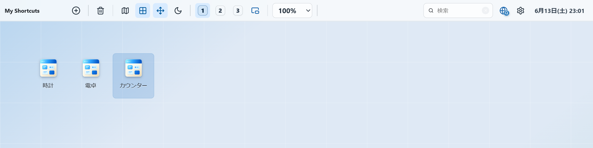
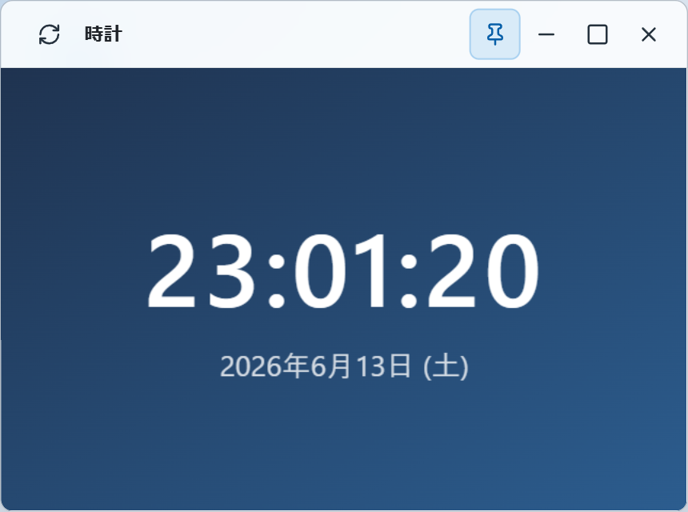
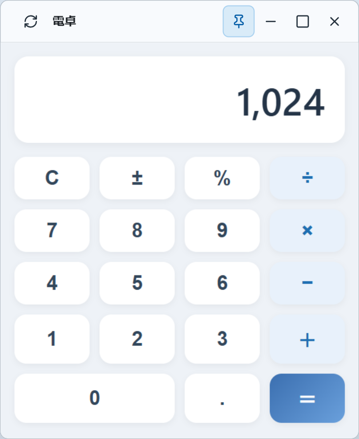

つくったものを、置いておける。
時計、電卓、ちょっとしたツール。HTML で書いた小さなアプリを、デスクトップのアイコンに。
置いておく
アイコンにして、いつでも。
HTML ファイルを読み込むか、その場で書くだけ。あとはダブルクリックで、独立したウィンドウですぐに動きます。よく使うものはピン留めしておけば、開くたびに自動で表示。
- HTML ファイルを読み込むだけ
- 独立したウィンドウで安全に動く
- 書き出して、持ち運びもできる

たとえば
こんなものも、動きます。
アイデアしだいで、自分だけの小さな道具を。
-
1
時計
いまの時刻と日付をいつも表示。動きのあるものも、ちゃんと動きます。デスクの上に置いておくだけで便利。

-
2
電卓
ボタンの並ぶ電卓のような道具も。ちょっとした計算に、わざわざ別のアプリを開かなくても。
